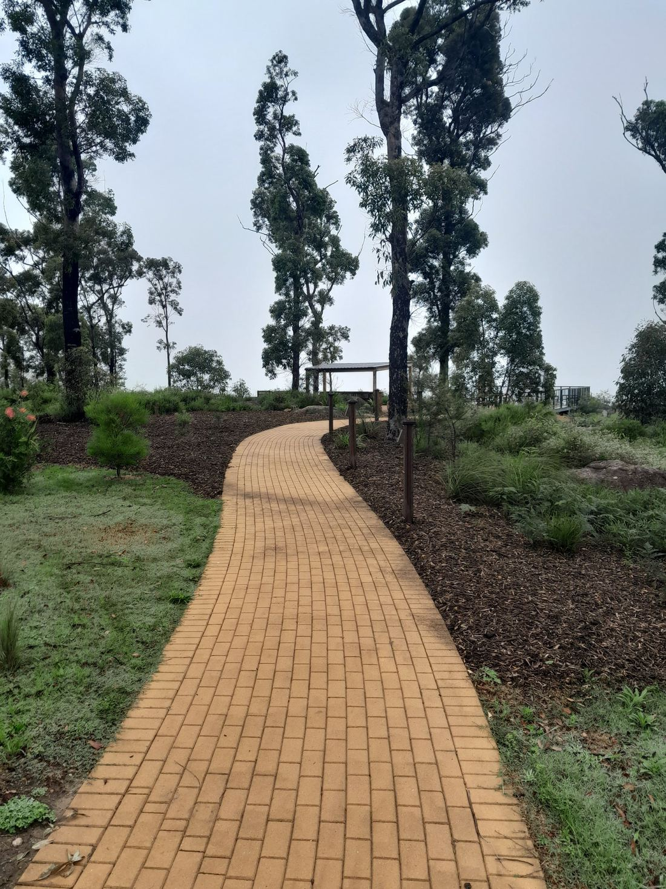
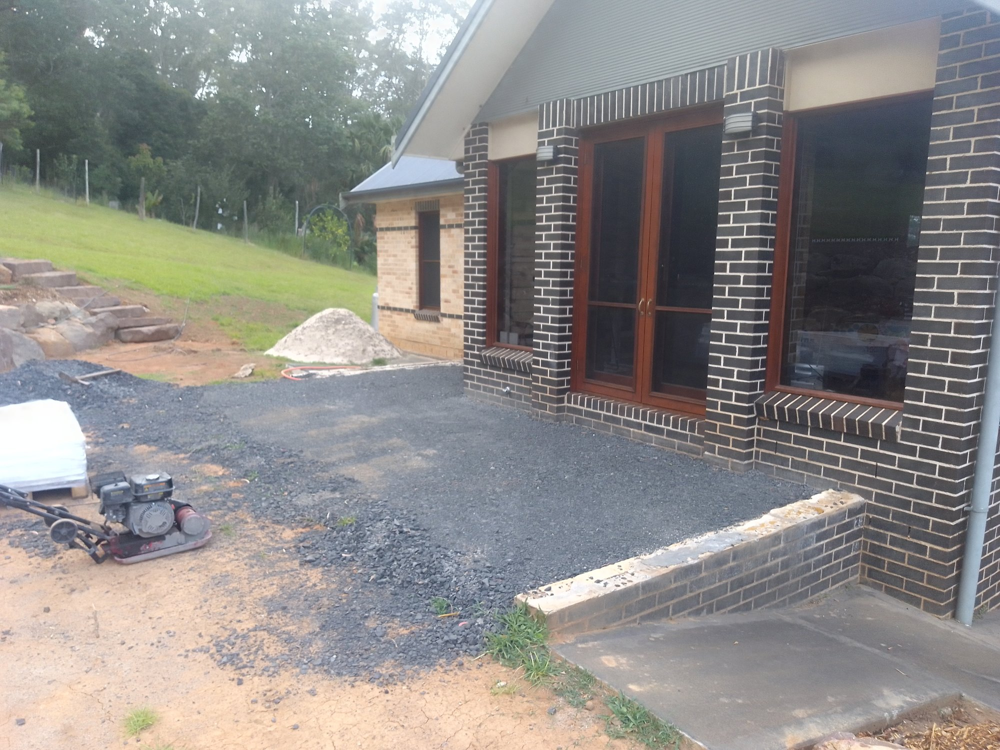
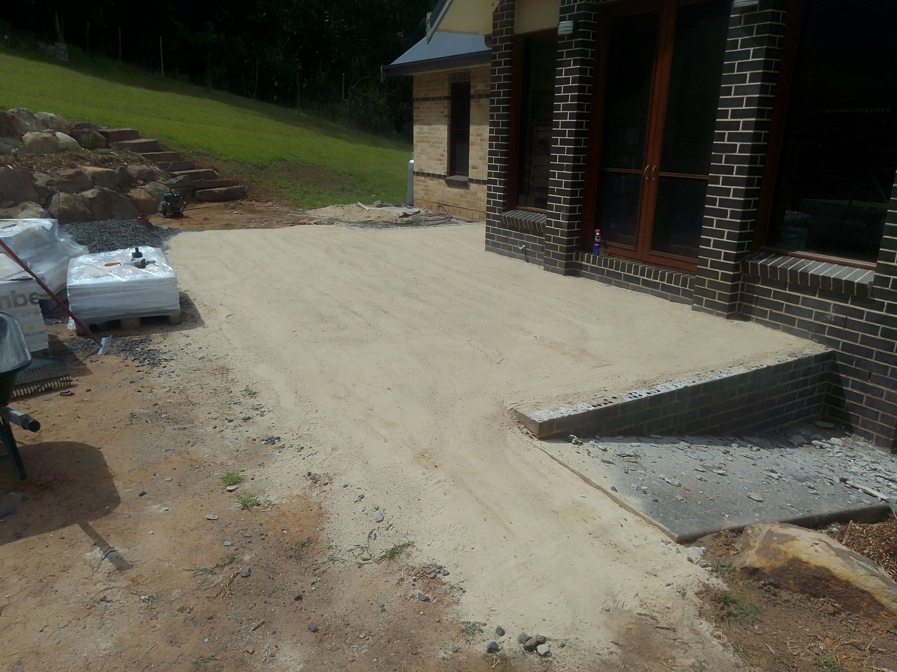

Kangaroo Valley is my home and my work base. I've landscaped in and around the valley for years — the same valley I walk, garden and raise my family in. It is a place of river flats, sandstone ridges and bushland interfaces, where properties range from small village blocks to sprawling acreage. I know this landscape — the way the valley floor holds the morning fog, how the wind funnels between the ridges, and which soil holds moisture and which one never seems to dry out.

Kangaroo Valley is my home and my work base. I've landscaped in and around the valley for years — the same valley I walk, garden and raise my family in. It is a place of river flats, sandstone ridges and bushland interfaces, where properties range from small village blocks to sprawling acreage. I know this landscape — the way the valley floor holds the morning fog, how the wind funnels between the ridges, and which soil holds moisture and which one never seems to dry out.
See kangaroo valley servicesText us a photo of the place and we'll get back to you the same day with a quote. Every job gets quoted on its own.
Prefer email? mathew.gardensolutions@gmail.com
Here's what makes this part of the Shoalhaven distinct — and how it affects your garden.
The valley sits in a rain shadow between the coastal ranges and the sea. The floor is sheltered from the open ocean, but the surrounding ridges channel southerly and south-westerly winds through the winter, and cold air settles in low-lying paddocks and the village street after dark — frost pockets are common. In summer, north-westerly heat events can dry the soil out quickly on the exposed ridge-top and hill properties. The Kangaroo Valley River and its creeks moderate the temperature near the water, but the higher country can be considerably cooler. If you are planting on a hilltop or a hollow, think about aspect: a north-facing slope in winter gets the sun first and stays warmer; a south-facing slope stays damper and cooler.
Most of the valley floor and its first terraces are deep, friable sandy loam over sandstone, with a seasonal topsoil that responds well to organic matter. Near the river flats, alluvial soils are deeper and richer, but they can be waterlogged in heavy rain. On the higher country the soil thins out over rock, and drought-resistant planting is the practical choice. The practical implication: before you plant, work the soil you actually have. Sandy sites need mulching and organic matter to hold moisture; clay pockets near the river need drainage attention before anything is put in the ground.
The village's historic main street, the Kangaroo Valley River and its parklands, and the surrounding Budawang and Murrindindi ranges. The valley road itself is a landmark — a winding route that has shaped the town for more than a century. Local references in my work include properties above the river flats, hillsides near the village, and the national park edges where the bush meets the garden.
Real jobs from properties right here in kangaroo valley and the surrounding district.


Common questions from kangaroo valley properties — answered for this part of the district.
Everything you need for this part of the district.
TruLeaf Landscapes
TruLeaf Landscapes Kangaroo Valley NSW 2520 0423 325 989 mathew.gardensolutions@gmail.com
Recommended for properties in kangaroo valley and the surrounding district.